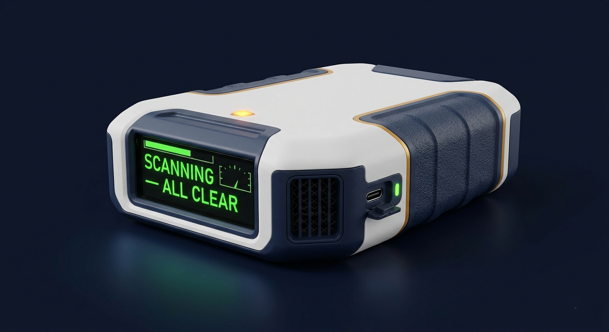

An innovative technology built on cutting-edge detection science, supported by decades of published research and engineering development in related fields — including published field reference works co-authored with researchers at Aberdeen Proving Ground. This solid-state, battery-powered multi-threat (CWAs, TICs, and explosives) detector uses proprietary optical detection with exceptional sensitivity (ppb to sub-ppb, pg to ng range). Seconds-level screening. 120-second on-site confirmation. No carrier gas. No radioactive source. No second instrument needed.

Having worked in the threat detection field for close to 30 years, we understand the limitations operators live with daily. r-Guard™ was designed specifically to close every gap that current technology leaves open.
Ion Mobility Spectrometry dominates field CWA detection — but its limitations are well documented. Poor spectral resolution and peak shifting lead to high false negative rates. Charge competition in mixed-vapor environments suppresses ionization of target agents, causing both nuisance false alarms and potentially fatal false negatives. Environmental changes, especially high humidity degrade performance precisely when reliability matters most. And the use of radioactive Ni-63 ionization source adds handling, transport, and disposal constraints that limit where and how it can be deployed.
Advanced AI deconvolution identifies specific agents in complex mixtures. No radioactive source. No charge competition failure mode. Spectroscopy-based identification precisely characterises detected components. Probabilistic confidence scores replace binary alarms, quantifying certainty for both identified agents and potential unknowns. Both false positive and false negative rates dramatically reduced.
Most field detectors produce a threshold alarm — positive or negative, a compound class at best. They cannot quantify confidence, report concentration, or distinguish a strong interferent from a genuine threat. Some IMS systems do report specific names, but with significantly higher false identification rates in complex environments where charge competition produces incorrect identifications. In high-stakes scenarios, a wrong answer is as dangerous as no answer.
r-Guard™ outputs specific agent identification with probabilistic confidence scores — not just a class name. Concentration estimate and full inference chain provided. The operator knows not just "what" but "how certain."
Every deployed detector only identifies what is already in its library. A novel synthetic agent, new precursor, or unknown toxic industrial chemical produces either a forced false match or silence. No molecular information reaches the operator. As adversarial chemistry evolves — novel CWA precursors, improvised materials, next-generation threats — this gap becomes increasingly critical. Adding a new substance requires a vendor update cycle measured in months.
r-Guard™ performs spectral fragment analysis — inferring probable functional groups, molecular desorption behavior from the thermal profile, and likely chemical class. Unknown alarms come with intelligence. New threats added via wireless OTA (Over-The-Air) update.
Traditional detection systems are effectively blind during their analysis cycle. GC-based instruments cannot monitor the air stream while processing a sample. IMS-based systems have maintenance windows where monitoring is interrupted. In a dynamic threat environment — a second release, a moving plume — a detection gap of even 30 seconds can be operationally decisive.
Continuous monitoring with no detection gaps. One sensor monitors continuously while the second is getting ready, either undergoing thermal purge or remaining idle. Sensor returns to monitoring within seconds of confirmation completion. The adaptive AI trigger primes the pre-concentrator silently during screening so confirmation is always instantly ready.
GC-MS-based confirmation instruments require compressed carrier gas cylinders, high-vacuum pumps, and significant electrical power. IMS units contain radioactive Ni-63 ionization sources subject to transport restrictions. These constraints make confirmation-capable instruments laboratory-bound or vehicle-mounted. For dismounted soldiers, UAV (Unmanned Aerial Vehicle) payloads, or resource-constrained first responders, field confirmation capability simply does not exist.
Tank-free. Source-free. Battery-powered. No compressed gas, no radioactive material, no vacuum pump. One replaceable air-scrubbing cartridge lasts hundreds of operating hours. Fits in a sling bag. Mounts on a UAV. Deploys anywhere.
When IMS alarms, the operator cannot confirm in the field. If verification is needed, it requires a separate GC-based instrument — laboratory or vehicle-mounted, requiring carrier gas, vacuum, and significant power. Analysis takes 5–15 minutes, during which exposure continues. The gap between "fast alarm" and "confirmed specific agent identification" has never been closed in a single portable instrument. Operators make decisions based on incomplete information or wait for results that arrive too late.
Screen and confirm in one device, on site. ~10 second screening. ~120 second full confirmation. No second instrument. No laboratory. No waiting. The decision cycle closes at the point of exposure — for the first time in a handheld package.
Each directly addresses a documented limitation of current detectors, especially the most widely deployed IMS-based systems, and the confirmation gap that has never been closed in a single portable field instrument.
Proprietary AI combined with optical identification outputs confidence scores, not binary alarms. Distinguishes target agents from interferents in complex mixtures. Charge competition — the primary IMS failure mode causing false negatives in mixed environments — does not apply to our detection principle.
IMS: high false positive AND false negative riskProprietary optical detection delivers exceptional sensitivity in a compact field instrument. Sensitivity maintained in humid, dusty, and chemically complex environments where IMS performance degrades significantly. Key for detecting high-volatility explosive vapors such as TATP, NG, and their precursors including acetone and hydrogen peroxide.
IMS sensitivity degrades with humidity & interferents~10s screening and ~120s full agent confirmation in one handheld unit. Eliminates the confirmation gap that forces operators to choose between fast-but-unreliable or accurate-but-absent. No second instrument. No laboratory. No waiting.
IMS + GC-based instrument required todayFor compounds not in any library, r-Guard™ performs spectral fragment analysis analogous to mass spectrometry: characteristic peaks are mapped to molecular functional groups (organophosphate, C=O carbonyl, C-H, halide class). The thermal desorption temperature profile separate components. Together these allow the AI to infer probable chemical class and — in many cases — make a reasoned estimate of the specific compound, even without a library match. Unknown alarms come with actionable molecular intelligence, not silence.
Current detectors: unknown = silence or forced false matchSome IMS systems report specific agent names, but with significantly higher false identification rates in complex environments where charge competition produces incorrect results. r-Guard™ identifies individual molecules with spectroscopic precision, providing the specific agent name alongside a calibrated confidence score and full inference chain the operator can evaluate.
IMS: class-level or unreliable specific IDNo Ni-63 ionization source — no radioactive handling, transport restrictions, or disposal. No compressed gas cylinders. No high-vacuum pump. One replaceable air-scrubbing cartridge used to clean the system when needed is the only consumable, lasting hundreds of operational hours.
IMS: Ni-63 source. GC-based: carrier gas + vacuumNew AI models and spectral libraries pushed wirelessly to all deployed devices simultaneously. As novel agents, precursors, and emerging threats appear, the entire sensor fleet is updated at software speed — no hardware recalls, no field modifications, no vendor update cycle measured in months.
Current systems: vendor hardware update requiredTwo adaptive modes run in concert — continuous monitoring transitions seamlessly to active high-resolution confirmation without user intervention.
Ambient air flows continuously through the detection sensor. The AI model monitors the real-time detection stream at low power, establishing a dynamic baseline. Provides fast alarming for high-concentration threats with minimal latency.
Triggered automatically when the AI detects a 1σ/2σ deviation, or manually by the operator. Pre-concentrator desorbs via temperature ramp. AI inference engine runs full multi-variate analysis. Result in ~120 seconds.
When the AI model detects a 1σ deviation — before any peak is identified — the system silently ramps the pump, increases detector integration time, and primes the pre-concentrator. This “pre-discovery” state maximises data collection during the critical window between “something is present” and “agent confirmed,” without triggering a false alarm. Confirmation is only declared at ≥4σ confidence. This approach doubles effective battery life compared to continuous high-force operation, while ensuring no trace event is missed.
Designed from the ground up for field deployment — not adapted from laboratory equipment. Every component choice reduces size, weight, power, and logistics burden.
The sensor assembly is pre-aligned in a kinematic-mount sleeve. User swaps a contaminated or degraded module in under 30 seconds with no optical realignment. EEPROM on cartridge stores sensor baseline for instant AI recalibration.
Two independent sensor paths operated via proprietary switching architecture. One sensor monitors continuously while the second undergoes thermal purge. No detection gaps during cleaning cycles — critical in dynamic threat environments.
Compact solid-state trap collects and concentrates the sample stream continuously in the background. Controlled temperature ramp desorption provides separation by volatility class. Integrated heater serves dual purpose: desorption and sensor purge cycle.
Replaceable cartridge containing HEPA filter, molecular sieve desiccant, and activated carbon provides clean dry air for sensor purge cycles — eliminating the need for compressed gas cylinders entirely. Cartridge replacement interval: hundreds of operating hours.
Three-state display reflects real-time AI confidence. Green: clean baseline. Yellow: suspicious deviation detected, system actively investigating. Red: agent confirmed with identity and confidence score. Manual override enables operator-controlled sensitivity threshold.
On-board NPU provides full offline capability for life-safety alarming. Bluetooth/Wi-Fi bridge optional for data logging, remote monitoring, and cloud forensic library access when connectivity is available. No network dependency for core function.
For applications requiring the highest confidence identification — forensic documentation, post-incident analysis, or laboratory use — r-Guard™ accepts an optional fast micro-GC module. Resistive or inductive heating eliminates column warm-up time while maintaining the compact footprint. This transforms the same device into a GC-level analytical instrument without replacing the core sensor and without adding compressed carrier gas requirements. The AI deconvolution layer continues to operate alongside physical separation, combining both for maximum identification confidence and the verification expected for legal or forensic-grade results.
Current portable detectors force a choice between speed and specificity. r-Guard™ eliminates that trade-off.
| Criterion | IMS (Field Standard — JCAD, M4A1) | GC-Based Systems (Lab / Confirmation) | PID (First Responder Survey) | ⚡ r-Guard™ (AATG) |
|---|---|---|---|---|
| Screening Speed | <30 sec | 5–15 min | <5 sec | ✓~10 sec continuous |
| Confirmation Speed | Not applicable | 5–15 min | Not applicable | ✓~120 sec field |
| Molecular Specificity | Moderate — drift time only | High | None — class survey only | ✓High — field grade |
| False Positive Risk | High — perfume, sanitizer, fuels | Low | Very high — non-specific | ✓Low — AI-filtered |
| False Negative Risk | High — charge competition in mixtures | Low | High — below threshold | ✓Low — exceptional sensitivity + AI analysis |
| Mixture Analysis | No — charge suppression | Yes — physical separation | No | ✓3-layer digital deconvolution |
| Carrier Gas / Consumables | None | Cylinders, columns, calibration gas | None | ✓Air cartridge only — no gas |
| Probabilistic Output | Binary alarm only | Binary result only | Concentration reading only | ✓Full confidence score + chain |
| Unknown Compound | False alarm or miss | Library mismatch flagged | Uncharacterised | ✓Functional group + volatility class |
| Continuous Monitoring | Yes | No — batch mode | Yes | ✓Zero blind spot — dual sensor |
| Weight | 2–15 lbs | 20–50 lbs | <3 lbs | ✓<5 lbs |
| Field Deployable | Yes — handheld | Lab / vehicle only | Yes — handheld | ✓Handheld / UAV / fixed site |
| Updateable Library | Limited — vendor update | Limited — vendor update | Not applicable | ✓OTA wireless update |
* IMS = Ion Mobility Spectrometry, the most widely deployed field CWA detector technology. GC-based systems include portable GC-MS and related instruments. PID = Photoionization Detector. Development-stage platform — r-Guard™ performance figures are projections based on component specifications. Field validation studies are planned.
The same core hardware serves defense, security, and industrial applications. Library and configuration updates tailor the device to each domain without hardware modification.
Real-time CWA detection for soldiers, medics, and CBRNE specialists. Wearable/handheld form factor eliminates the logistics burden of compressed gas that currently limits frontline deployment. Continuous monitoring with no detection gap during confirmation cycles.
Sub-5 lb weight and tank-free design makes r-Guard™ the ideal chemical-reconnaissance payload for UAVs and unmanned ground vehicles. Enables standoff CWA detection and area mapping without risking personnel. Edge NPU provides full autonomous operation without ground station connectivity.
Rapid screen-then-confirm capability for civil defense teams at transit hubs, chemical incidents, and disaster sites. Probabilistic output guides triage without false alarms.
Continuous monitoring at airports, border crossings, government facilities, and chemical plants. Ambient air-scrubbing enables permanent installation without gas supply infrastructure.
Detection of Toxic Industrial Chemicals (TICs) in manufacturing environments. Same hardware as defense application — library update targets industrial hazards. No hardware modification required.
High-confidence molecular identification with full inference chain output for forensic documentation. Cloud forensic mode accesses extended library of 100,000+ compounds.
Library selection reconfigures r-Guard™ for each threat type. The same core hardware and sorbent cartridge — optimised for VOC collection and moisture removal — serves all configurations. A software library selection is all that changes.
| Configuration | Target Threats | Key Capability | Primary Users |
|---|---|---|---|
| ☠ CWA ScreenStandard | Nerve agents (G, V series), blister agents (HD, L), blood agents, choking agents | Continuous ~10s screening with AI agent identification and confidence scoring. Identifies specific agent, not just compound class. On-site confirmation in ~120s. No second instrument required. | Military CBRNE, first responders, fixed-site monitoring |
| ⚖ CWA + GC ConfirmOptional add-on | Full CWA panel + forensic-grade confirmation | Physical GC separation combined with AI deconvolution approaches GC-MS-level confirmation performance — AI layer operates alongside GC for maximum confidence. For legal-grade documentation and post-incident forensic analysis. | Forensic teams, post-incident analysis, legal-grade evidence |
| 🏭 TIC MonitorLibrary update | Toxic industrial chemicals: ammonia, chlorine, phosgene, HCN, and 100+ industrial hazards | Continuous area monitoring for industrial accident, spill, or deliberate release. Same hardware — different spectral library selection. No hardware modification required. | Industrial safety, occupational health, disaster response, plant monitoring |
| 💥 Explosive TraceLibrary update | TATP, NG, RDX, PETN, HMTD vapor; TATP precursors (acetone, hydrogen peroxide) | TATP and other high-volatility explosive compounds produce detectable vapor signatures at ppb levels. Acetone and hydrogen peroxide detection provides early TATP precursor warning. Addresses a known detection gap in current airport and checkpoint IMS deployments. Same thermal desorption engine — different temperature profile and spectral library. | Military Explosive Ordnance Disposal (EOD), border security, checkpoint screening, aviation security |
* All configurations use the same core hardware and sorbent cartridge. Switching between CWA, TIC, and Explosive modes requires only a library selection — no hardware or cartridge change. CWA + GC Confirm requires the optional fast micro-GC add-on module. Development-stage platform — field validation studies planned.
r-Guard™ overcomes the fundamental sensitivity and selectivity limitations of conventional field detectors through a proprietary multi-layer approach — each layer solving a specific failure mode.
Our proprietary optical detection platform achieves exceptional sensitivity that conventional portable detectors cannot match — delivering ppb to sub-ppb, pg to ng range detection in a compact field instrument.
A solid-state pre-concentrator accumulates the sample stream in parallel with continuous monitoring. When analysis is triggered, a controlled temperature ramp releases compounds by volatility class — lighter interferents first, heavier threat agents later. This provides physical temporal separation without GC columns, carrier gases, or complex fluidics.
A hybrid proprietary AI engine performs real-time analysis. A fast anomaly-detection model monitors continuously for deviations. A full inference engine performs agent identification during confirmation — providing probabilistic confidence scores, unknown compound attribution, and physics-informed reasoning rather than black-box pattern matching.
The r-Guard™ instrument is designed as a long-term platform. New capabilities are added through cartridge, library, and accessory updates — no hardware replacement required for the base unit.
A thermal desorber accessory accepts wipe samples from surfaces. The desorbed vapor flows directly into the r-Guard™ sensor, enabling surface contamination screening for CWA residues, explosive transfer, and toxic industrial spills — extending the platform from air monitoring to forensic surface analysis without additional core hardware.
TATP (and TATP precursors, i.e. acetone, hydrogen peroxide), NG, are high-volatility compounds within r-Guard™ detection range. Acetone and peroxide — commonly used in TATP synthesis — serve as precursor indicators. Library expansion delivered as OTA software update. No hardware change required.
Expanded library covering 200+ toxic industrial chemicals across ammonia, chlorine, phosgene, HCN, and industrial solvent classes. Supports fixed-site and mobile monitoring for chemical plant incidents, rail hazmat, and environmental contamination events. OTA library update only.
The same core sensor scaled to a benchtop instrument with an optional fast micro-GC module. Achieves near-GC-MS confirmation performance for forensic, pharmaceutical validation, and advanced field laboratory use &mdash. Bridges field and lab in one platform family.
Fentanyl and novel synthetic opioid analogs at ppb levels — a critical officer safety and border interdiction need. AI functional group inference handles novel analogs even without a specific library match. Same hardware; narcotics sorbent cartridge and OTA library update required.
The vapor detection platform extends to industrial environmental compliance and pharmaceutical manufacturing cleaning validation — detecting residual API and solvent contamination. Aligns with AATG’s existing r-Pharm™ platform for pharmaceutical applications.
The same proprietary optical detection and AI inference architecture already powers BreathDX™, our breath-based cancer diagnostic system for lung and breast cancer detection. Volatile organic compounds (VOCs) exhaled by cancer patients are detected and analysed using the same proprietary multi-layer methodology. This cross-domain validation provides the strongest evidence that the r-Guard™ platform science is real and validated in a demanding real-world application. Learn more about BreathDX™ →
Core detection methodology and AI architecture validated. Investment now accelerates hardware integration and field demonstration.
We welcome inquiries from defense and security partners, government program officers, UAV/UGV platform integrators, and potential co-founders with spectroscopy or medical device hardware backgrounds.